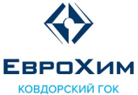
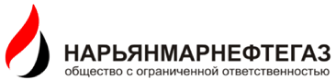
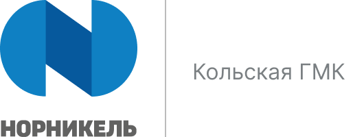
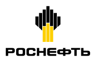
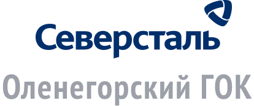
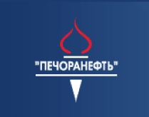

Мурманское землеустроительное проектно-изыскательское предприятие
Промо-блок о компании
Рядом с вами
более 60 лет
Виды работ
- Геодезические и картографические работы
- Инвентаризация земель
- Образование и упорядочение объектов землеустройства
- Межевание объектов землеустройства
- Разработка дежурных карт ограничений и обременений в использовании земель
- Составление, прохождение и утверждение сметно-договорной документации
- Проведение инженерных геодезических работ
- Дистанционное зондирование
- Землеустройство на территориях коренных малочисленных народов РФ
- Оценка земель
Наши клиенты

  - 
 - 
